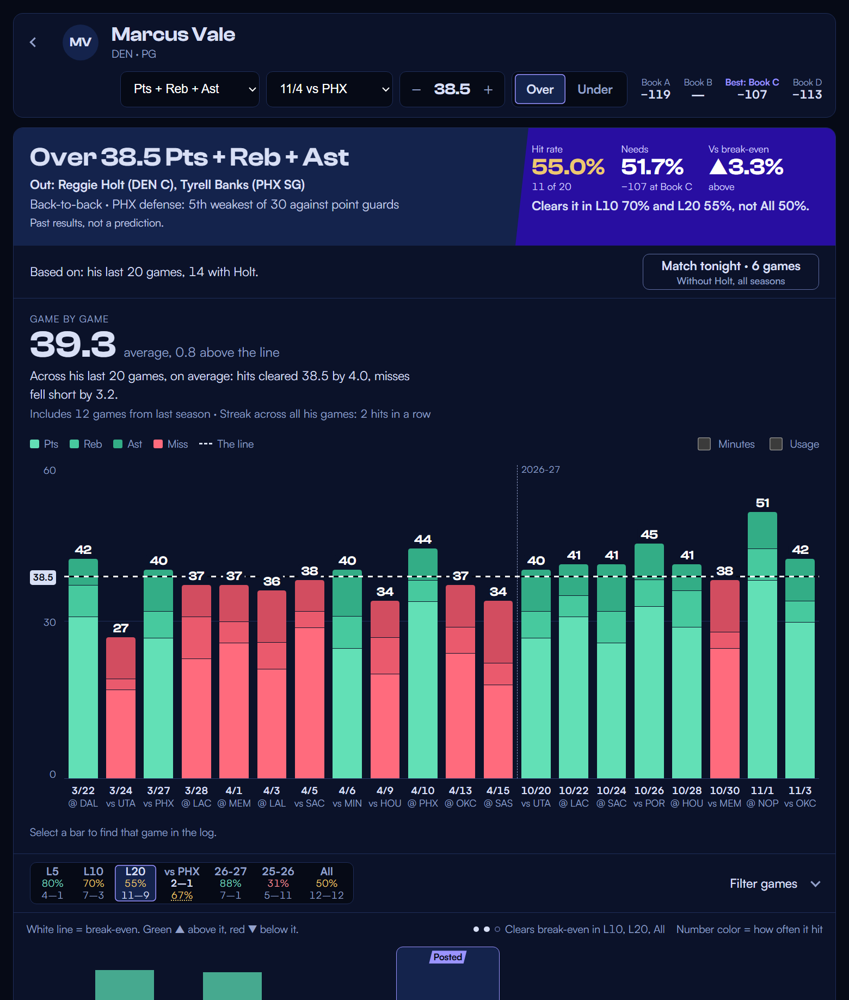

Read the line, not the hype.
We give you the Streak Board, hit rates, game logs and matchups for NBA player props. You make the call. Join the hunt.

Design preview. All players, games, lines, odds and results on this page are made up.
We give you the Streak Board, hit rates, game logs and matchups for NBA player props. You make the call. Join the hunt.
